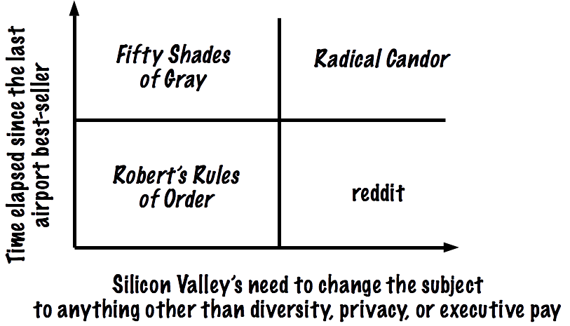

Afraid of Change
A few months ago, I had the misfortune to take part in an awful one-day workshop based on an equally awful book called Radical Candor. For those lucky enough not to have had to wade through its relentless name-dropping, it is a blog post padded to book length telling readers that the secret to success is to always tell people whatever you think is true. Conveniently (if you’re in a position of power), it pretends that everyone is able to do this without fear of consequences.
I think thought leaders in Silicon Valley started recommending it to each other for two reasons. First, it allows them to blame subordinates for not speaking out (again, ignoring the experience some of those subordinates may have had of bosses who say “I want to hear what you think” but really don’t). Second, it satisfies tech bros’ need to talk about something other than sexual harassment, racial discrimination, and pay inequity—in other words, their need to talk about things that sound important but won’t make them uncomfortable or undermine the system that they hope will make them rich.
What crystallized my dislike was the way the workshop’s trainer danced around when asked if James Damore’s infamous memo counted as “radical candor”. Damore’s memo passed all of the tests of “radical candor” the trainer had just outlined, but since it would have been awkward for him to say “yes”, he talked around the question for a couple of minutes without actually answering it. A little while later, one of the women in the workshop pointed out that “say what you think” is a much riskier strategy for her than it is for a middle-aged straight white guy. In response, one of the men said, “Are you saying the book is sexist?” When she said yes, he replied, “But it can’t be—the author is a woman.”

What ties this all together, I think, is a deep-seated fear of change: not the superficial kind, like virtual reality or speech recognition, but meaningful changes in who we are, how we work, and the kind of society we construct. A quick search at your favorite online bookstore will turn up hundreds or thousands of books on how to start a tech company. Where are the books on how to keep one going? Where’s the guidance on what to do once your exponential virality or blitz scaling or whatever the hell they’re call it this week is behind you, as it inevitably will be some day? It’s as if Silicon Valley only cared how to pick up, not about how to maintain a healthy relationship. (The fact that there are more workshops in the Valley on the former than on the latter is probably not a coincidence.)
What companies like Facebook, Twitter, Google, and Shopify are doing these days is worse than a bunch of twenty-somethings (many of whom are physically in their thirties or forties) refusing to grow up and think about the long term because gosh, change is really scary. It’s worse, but it has grown from the same seeds. Hiring a dirty tricks outfit to smear your critics, or continuing to say, “But free speech!” after people are killed in Charlottesville, Quebec City, and Pittsburgh is cynical rather than immature, but springs from the same desire to avoid growing up—the same deep fear of real, meaningful change.
Footnote: the workshop was held at a DataCamp all-hands meeting, several months after the company’s CEO sexually assaulted one of the staff but before that had become public knowledge. I think the fact that a CEO would reach for this book as a solution to the crisis caused by his actions says a lot about whose interests “radical candor” actually serves. For more about DataCamp’s mishandling of this incident, please see Davey Alba’s excellent summary in Buzzfeed.